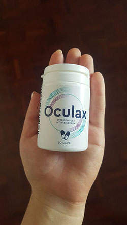
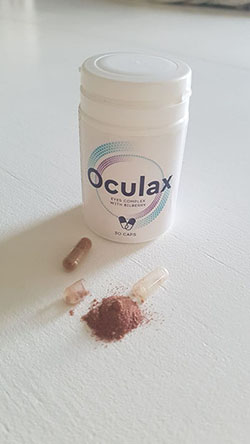

Αθηνα, Ελλάδα. Στις 26/01/2021 ξέσπασε ένα σκάνδαλο στην Οφθαλμολογική Κλινική Oftalux, και το έμαθαν όλοι. Ο Αναπληρωτής Διευθυντής, ο προϊστάμενος ανακριτής, καθώς και ορισμένοι άλλοι υπάλληλοι της κλινικής κατηγορούν τη διοίκηση ότι επιτηδές εμποδίζει το ινστιτούτο από τη χρήση του προϊόντος το οποίο επιτρέπει την αποκατάσταση της όρασης στο επίπεδο του 95-100% χωρίς χειρουργική επέμβαση, αποκλειστικά με ανάκτηση.
Ομάδα επιστημόνων δημοσίευσε μια ανοιχτή επιστολή ζητώντας τη «Διάσωση της Κεντρικής Οφθαλμολογικής Κλινικής από απληστία, διαφθορά και απάτη».
Την επιστολή υπέγραψαν:
- Σωτήριος Γιαννούλης. Αναπληρωτής διευθυντής επιστημονικών και κλινικών έργων και εφαρμογής νέων τεχνολογιών, Διδάκτωρ Ιατρικής.
- Όλγα Γιάνναρη. Προϊσταμένη ανακριτής της κλινικής, Διδάκτωρ Ιατρικής.
- Σταμάτιος Λαγός. Επικεφαλής ιατρός κλινικής, ειδικός στον τομέα της οφθαλμολογίας με 30ετή εμπειρία, διδάκτορας.
- Αδάμ Μήτρας. Διευθυντής του οφθαλμολογικού κέντρου.
- Γεώργιος Μεσσηνέζης. Εξπέρ στον τομέα της οφθαλμολογίας, διδάκτορας του Τμήματος Οφθαλμικών Παθήσεων.
- Χαράλαμπος Γιαννάκης. Εξπέρ στον τομέα της οφθαλμολογίας, ειδικός ανώτατης κατηγορίας. Και άλλοι υπογράφοντες.
Τους ειδικούς τους υποστήριξε επίσης το διεθνές οφθαλμολογικό Ίδρυμα «Όραση για Όλους».
Οι ειδικοί λένε ότι η διοίκηση της κλινικής (που εκπροσωπείται από τον γενικό διευθυντή Πρόδρομο Μανιάκη και τον αναπληρωτή διευθυντή για οργανωτικές δραστηριότητες Μιχαήλ Καραμανλή) τους απαγορεύει να χρησιμοποιούν το νέο για τη θεραπεία των πελατών.
Και αυτό είναι λόγω μείωσης του αριθμού των επεμβάσεων (στο 86% των περιπτώσεων το επιτρέπει την αποκατάσταση της όραση χωρίς χειρουργική επέμβαση), η οποία, με τη σειρά της, οδηγεί σε μείωση των εσόδων της κλινικής.
Όπως δήλωσε η μία από τους υπογράφοντες αυτής της ανοιχτής επιστολής, η προϊσταμένη ειδικός της οφθαλμολογικής κλινικής Oftalux Όλγα Γιάνναρη: "Σήμερα η διοίκηση της κλινικής έχει τέτοιου είδους δικαιολογίες, ότι το κέντρο δεν μπορεί να υπάρξει χωρίς έσοδα και σύντομα θα χρεοκοπήσει. Όμως δεν είναι αλήθεια. Η κλινική λαμβάνει κρατική χρηματοδότηση κατά 90% εδώ και πολλά χρόνια. Όλοι μας ξέρουμε που πάνε τα έσοδα από ακριβές εγχειρήσεις!".
"Θέλω να δώσω αριθμούς που είναι πάντα πιο πειστικοί από οποιεσδήποτε λέξεις: ανά χρόνια -το κόστος των επεμβάσεων στην πολυκλινική και τους θαλάμους αυξήθηκε σχεδόν κατά 150%, και ο αριθμός των εγχειρήσεων - 2 φορές! Σημαίνει ότι οι άνθρωποι έχουν πολλά λεφτά; Δεν νομιζω. Απλώς τώρα ισχύει μια διαφορετική πολιτική: οι ειδικοί ενθαρρύνονται κρυφά να συστήνουν εγχειρήσεις σε όλους τους πελάτες. Οι άνθρωποι είναι έτοιμοι να κάνουν τα πάντα για να αποκαταστήσουν την όραση τους, γι' αυτο συχνά τα δέχονται όλα.
Ταυτόχρονα, είναι λίγοι γνωρίζουν, καθώς η διοίκηση της κλινικής αποτρέπει με κάθε δυνατό τρόπο τη διάδοση αυτών των πληροφοριών, ότι σήμερα υπάρχει ένα σύγχρονο προϊόν με το οποίο μπορείτε να αποκαταστήσετε την όραση σας χωρίς λέιζερ και χειρουργείο. Αυτό αποδεικνύουν πολλές κλινικές δοκιμές, μαζί με την πρακτική χρήσης του προϊόντος στην κλινική. Το χρησιμοποιούν για αποκατάσταση της όρασης στις περισσότερες ευρωπαϊκές χώρες. Όπως η Γερμανία, η Γαλλία, το Ηνωμένο Βασίλειο και άλλες. Και στη χώρα μας, οι άνθρωποι εξακολουθούν να τραυματίζονται από χειρουργικές επεμβάσεις, μετά των οποίων η όραση αρχίζει να επιδεινώνεται ξανά όσο περνάει ο καιρός.
Άλλωστε, η εγχείρηση είναι η παρέμβαση στη δομή, αφήνει ουλή για μια ζωή. Ναι, δεν φαίνεται, αλλά αυτό το μέρος είναι ήδη πειραγμένο! Και πάλι, λίγοι άνθρωποι γνωρίζουν ότι σε περισσότερο από το 90% των περιπτώσεων πρέπει να υποβληθούν σε δεύτερη επέμβαση μέσα σε 3-5 χρόνια, ενώ το βελτιώνει την όραση χωρίς χειρουργική επέμβαση για πάντα. Ως γεγονός, ομαλοποιεί όλες τις διεργασίες που συμβαίνουν στα όργανα της όρασης... Και το πιο προσβλητικό είναι ότι είναι τοπικό προϊόν. Γιατί να υποφέρουν οι πελάτες μας; Νομίζω ότι η διοίκηση της κλινικής φέρεται τουλάχιστον ανέντιμα απέναντι στους απλούς ανθρώπους, γι' αυτό και εγώ και οι συνεργάτες μου γράψαμε αυτήν την επιστολή".
Μάθετε περισσότερα για το νέο προϊόν αποκατάστασης όρασης της που προκάλεσε το σκάνδαλο.
Ο δημιουργός του προϊόντος είναι ένας γνωστός Έλληνας ακαδημαϊκός, ειδικός στον τομέα της οφθαλμολογίας, που αφιέρωσε όλη του τη ζωή στην αποκατάσταση της όρασης? ο Νικόλαος Αγγελακόπουλος. Ο Νικόλαος Αγγελακόπουλος σπάνια έδινε συνεντεύξεις και δεν εμφανιζόταν δημόσια, προτιμώντας να εργάζεται στο εργαστήριο και στο δικό του γραφείο στο "Κεντρο αποκατάστασης της όρασης". Ως εκ τούτου, λίγοι άνθρωποι γνωρίζουν τη συνεισφορά αυτού του επιστήμονα στη σύγχρονη οφθαλμολογία. Μιλάμε βέβαια για απλούς ανθρώπους, αλλά οι επιστήμονες, φυσικά, γνωρίζουν τον Νικόλαο Αγγελακόπουλο από τα έργα και τις δημοσιεύσεις του σε επιστημονικά περιοδικά.
Το πρώτο προϊόν που δημιούργησε ο επιστήμονας μαζί με τους συναδέλφους ονομαζόταν "Αετός". Η ανάπτυξή του ξεκίνησε το 2001 στο Πανεπιστήμιο Ιατρικής και Φαρμακευτικής.
Οι επιστήμονες χρειάστηκαν σχεδόν 8 χρόνια για να δημιουργήσουν ένα προϊόν που βελτίωνε σημαντικά την όραση χωρίς χειρουργική επέμβαση, αυξάνοντας τον τόνο των μυών των ματιών και διορθώνοντας την αδιαφάνεια του φακού. Το προϊόν μπορεί να χρησιμοποιηθεί για τη θεραπεία των εξής παθήσεων των ματιών:
- μυωπία,
- γλαύκωμα,
- καταρράκτη,
- φλεγμονή του οπτικού νεύρου,
- οπτική νευρίτιδα,
- ραγοειδίτιδα,
- χοριοαμφιβληστροειδίτιδα,
- αποκόλληση του αμφιβληστροειδούς,
- θόλωση του κερατοειδούς,
- βλεφαρίτιδα,
- φλόγωση της μεμβράνης των βλεφάρων,
- μελαγχρωστική αμφιβληστροειδίτιδα,
- κερατίτιδα.
Και πολλα ακόμα. Όμως, οι Έλληνες πελάτες δεν έχουν δει ποτέ το ίδιο το προϊόν.
Στις 2 Δεκεμβρίου 2010 συνέβη μια τραγωδία - ο γνωστός ειδικός στον τομέα της οφθαλμολογίας, ο Νικόλαος Αγγελακόπουλος, πέθανε σε ηλικία 88 ετών από ανακοπή καρδιάς.
Μετά το θάνατο του επιστήμονα, κανείς δεν νοιάστηκε για το προϊόν που ήταν σχεδόν έτοιμο. Μέχρι εκείνη τη στιγμή, είχε ήδη περάσει μια σειρά από κλινικές δοκιμές, οι οποίες απέδειξαν την υψηλή αποτελεσματικότητά του. Αυτό το χρησιμοποίησε ένας από τους υπαλλήλους του εργαστηρίου, ο οποίος πούλησε τη φόρμουλα του φαρμάκου για λίγα χρήματα εκείνη την εποχή (δεδομένης της υψηλής απόδοσης) στην αμερικανική οφθαλμική εταιρεία η οποία μέσα σε 2 χρόνια έστησε την παραγωγή του προϊόντος με διαφορετικό όνομα.
Μόνο το 2019, χάρη στις προσπάθειες της Ειρένας Καιλογκαιριάνου και του προϊστάμενου ανακριτή του επιστημονικού κέντρου Φλορίν Στεν, με μεγάλη δυσκολία μπόρεσε να υπερασπιστεί το δικαίωμα ευρεσιτεχνίας και συνεχίστε την ανάπτυξη του προϊόντος. Ωστόσο, το ίδιο το προϊόν είχε κάποιες αλλαγές: αντί για ξεπερασμένες τεχνολογίες και αναποτελεσματικά συστατικά, άρχισαν να χρησιμοποιούν θρεπτικά συστατικά (βιταμίνες και ιχνοστοιχεία με αντιοξειδωτικές ιδιότητες) που είναι σημαντικά για τη λειτουργία του συστήματος προστασίας των ματιών από οξειδωτική βλάβη, και από τις επιβλαβείς μπλε ακτίνες του φάσματος του ήλιου. Χάρη σε αυτό, ήταν δυνατό να αυξηθεί η αποτελεσματικότητα του προϊόντος κατά 47% ακόμα. Το ενισχυμένο προϊόν έγινε γνωστό ως .
Σύμφωνα με επιστήμονες και γιατρούς, στο 87% των περιπτώσεων, το επιτρέπει την αποκατάσταση της όρασης κατά 100% χωρίς χειρουργική επέμβαση!
"Η θεραπεία μπορεί να γίνει στο σπίτι. Το μόνο που χρειάζεστε είναι να πάρετε 2 κάψουλες με το γεύμα και ένα ποτήρι νερό. "Μετά από μερικές ημέρες λήψης, θα παρατηρήσετε πώς βελτιώνεται η όρασή σας", λέει ένας από τους συετέχοντες που έγραψαν την επιστολή για τη αποκατάσταση της όρασης.
Σύνθεση του προϊόντος
Το περιέχει μόνο φυσικά συστατικά: βιταμίνες και θρεπτικά συστατικά απαραίτητα για τη φυσιολογική λειτουργία των οργάνων της όρασης.
- Morkov. Η υψηλή περιεκτικότητα σε άλφα- και βήτα-καροτίνη - προβιταμίνη Α, αποτρέπει
την παραβίαση της
προσαρμογής στο σκούρο και την κερατινοποίηση του δέρματος. Η βήτα-καροτίνη προστατεύει τα
κύτταρα από βλάβες από αντιδραστικά είδη οξυγόνου και ελεύθερες ρίζες. Με την τακτική χρήση
του , μπορείτε να μειώσετε τον κίνδυνο
μυωπίας.
Το περιέχει λουτεΐνη καρότου, η οποία αποτελεί μέρος της χρωστικής της ωχράς κηλίδας. Λειτουργεί ως φίλτρο μέσα από το οποίο πρέπει να περάσουν οι ακτίνες φωτός προτού ενεργοποιήσουν τα εξωτερικά τμήματα των φωτοϋποδοχέων, προστατεύοντας έτσι τα μάτια από το οπτικό και οξειδωτικό στρες που επηρεάζει την ευαισθησία του ματιού στο φως, το οποίο γίνεται ιδιαίτερα αισθητό σε ηλιόλουστες, χιονισμένες καιρικές συνθήκες. - Φύλλα βατόμουρου. Μεταξύ άλλων, το Okulaks ενισχύει την όραση και αυξάνει την ευκρίνειά της χάρη στα προκυανίδια και τα βιοφλαβονοειδή, που προστατεύουν τις μεμβράνες των αιμοφόρων αγγείων και των τριχοειδών αγγείων, βελτιώνοντας τη μικροκυκλοφορία του αίματος, κάτι που είναι ιδιαίτερα σημαντικό για τον φακό του ματιού και τον αμφιβληστροειδή.
- Φρούτα βατόμουρου. Η επιτάχυνση της αναγέννησης της ροδοψίνης και η ενεργοποίηση των ενζύμων του αμφιβληστροειδούς υπό την επίδραση του εκχυλίσματος μύρτιλου βελτιώνουν τη νυχτερινή όραση, μειώνουν τον κίνδυνο δυστροφίας του αμφιβληστροειδούς και επιταχύνουν τη διαδικασία ανάκτησης της όρασης μετά από παρατεταμένο οπτικό στρες.
Μετά από κλινικές δοκιμές έχει αποδείξει ότι το σύμπλεγμα ότι συμβάλλει στα εξής:
- πρόληψη οφθαλμικών ασθενειών, συμπεριλαμβανομένης της μυωπίας, του γλαυκώματος και του καταρράκτη,
- αποκατάσταση και διατήρηση της όρασης,
- προστασία της όρασης σε περίπτωση αυξημένου φορτίου (κατά την εργασία σε υπολογιστή και τη βλαβερή επίδραση του ηλιακού φωτός),
- ομαλοποίηση της πίεσης των ματιών,
- προστασία του φακού, συμπεριλαμβανομένης πρόληψης της θόλωσης,
- υποστήριξη οξείας όρασης,
- αύξηση της οπτικής αντίθεσης,
- αποκατάσταση κατεστραένων κυττάρων των οπτικών οργάνων,
- βελτίωση της κυκλοφορίας του αίματος στα οπτικά όργανα,
- ανακούφιση από τη ξηροφθαλμία (κούραση των ματιών, κνησμός, ερυθρότητα, ξηρότητα, ερεθισμός).
Οποιοσδήποτε κάτοικος της χώρας μπορεί να παραγγείλει το ΣΤΗΝ ΠΙΟ ΧΑΜΗΛΗ ΤΙΜΗ!!
Για να αποδείξει την υψηλή αποτελεσματικότητα του , καθώς και για να το συστήσει τον πληθυσμό της χώρας, η Ένωση Οφθαλμιάτρων Ελλάδος, στην οποία οι περισσότεροι ειδικοί που υπέγραψαν την ανοιχτή επιστολή είναι μέλη, προσφέρει το προϊόν στον πληθυσμό στη χαμηλότερη τιμή
Μπορείτε να δοκιμάσετε την αποτελεσματικότητα του προϊόντος!
ΟΠΟΙΟΔΗΠΟΤΕ ΚΑΤΟΙΚΟΣ ΕΛΛΑΔΟΣ ΜΠΟΡΕΙ ΝΑ ΠΑΡΑΓΓΕΙΛΕΙ ΤΟ ΜΕ ΠΑΡΑΔΟΣΗ ΣΤΟ ΤΑΧΥΔΡΟΜΕΙΟ ΤΗΣ ΓΕΙΤΟΝΙΑΣ!
Τι πρέπει να κάνετε;
- Συμπληρώστε το αίτημα.
- Περιμένετε να σας πάρει ο λειτουργος για να του πείτε σε ποια διεύθυνση πρέπει να παραδοθεί το προϊόν.
- Μετά από 4-7 ημέρες (χρόνος για παράδοση), θα πρέπει να πάτε στο ταχυδρομείο και να παραλάβετε το δέμα.
Η προσφορά ισχύει από 16/03/2021 έως 01/04/2021 (κατά τη διάρκεια αυτής της περιόδου, πρέπει να αφήσετε ένα αίτημα για αγορά του προϊόντος. Μετά από τη λήξη της προσφοράς θα ισχυρί η τιμή αγοράς)

